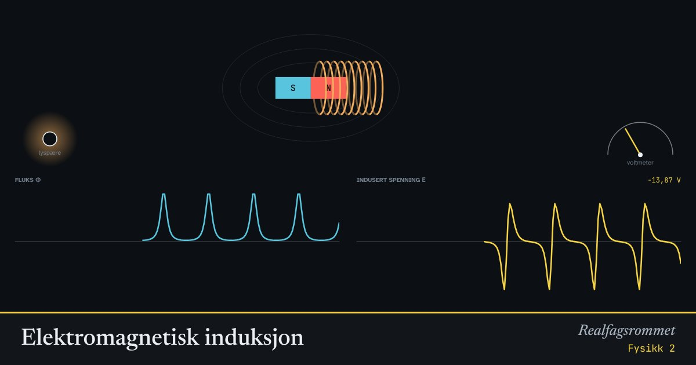

Elektromagnetisk induksjon
Når den magnetiske fluksen gjennom en spole endrer seg, induseres det en spenning. Det er ikke magneten i seg selv, men endringen, som gir strøm.
Start animasjonen
Formler
Om animasjonen
Den blå grafen er fluksen gjennom spolen. Den gule er den induserte spenningen. Legg merke til at spenningen er størst der fluksen endrer seg raskest, ikke der den er størst.
Lenz’ lov: den induserte strømmen setter opp et magnetfelt som motvirker endringen. Derfor er det et minustegn i Faradays lov.
I en generator roterer spolen i et magnetfelt. Fluksen varierer som en cosinus, og spenningen blir vekselspenning. Slik produseres nesten all elektrisk energi, fra vannkraftverk til vindmøller.
Prøv dette
- Stopp magneten midt inne i spolen. Hvor stor er spenningen da?
- Hva skjer med den maksimale spenningen når du dobler farten på magneten? Og antall vindinger?
- I generatoren: i hvilken stilling er fluksen størst? Og spenningen?
- Forklar hvordan et vannkraftverk lager elektrisk energi. Hvilke energiomforminger skjer?
Kompetansemål
- Fysikk 2: Induksjon og energiproduksjon